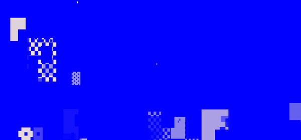
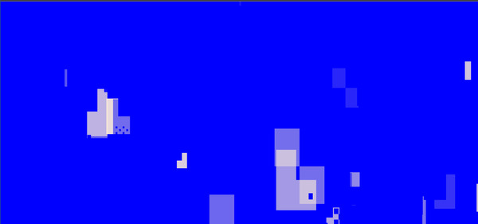
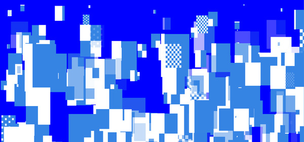

Lee Tusman
↩ Everyday
<
>
Title: A Throw of the Text
Year: 2021
Medium: Website
URL: throw_of_the_text.html↩
Description:
This piece takes as inspiration artist Marcel Broodthaers’ “Un Coup de Dés Jamais N'Abolira Le Hasard,” a re-interpretation of Stéphane Mallarmé's poem rendering the work's original text as structural graphic elements. This program builds upon this formula by arranging Unicode text characters as structural graphic elements, ignoring typical linear arrangements of text in a line. We have moved from Broodthaers’ original static book page presentation to the form of a web browser as canvas building up and shifting over time. Last year mathematician John Conway (of Game of Life fame) passed and there is a visual tribute here to the power of emergence through arrangement of primitive elements, though currently without interactivity between lifeform elements. For an alternate view of the structure as a whole the viewer is invited to “select all text” at any time to create a new visual form of the work.
Published: Taper #6



 ©opyleft
©opyleft